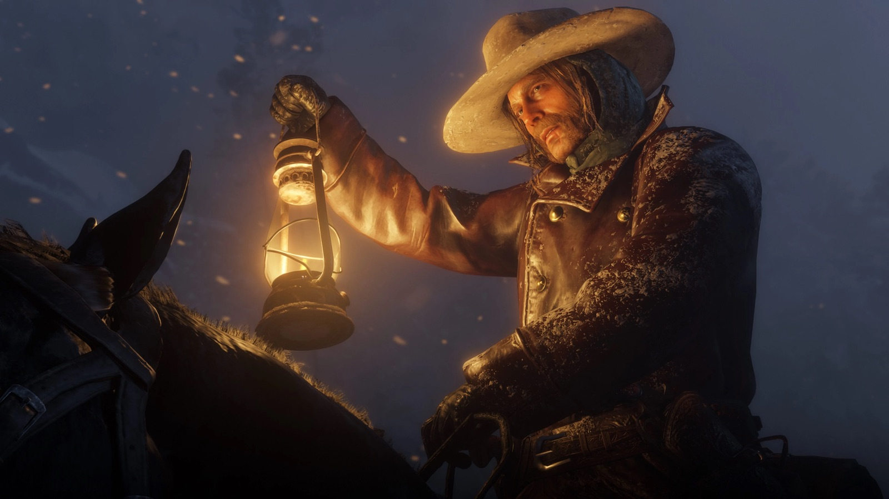
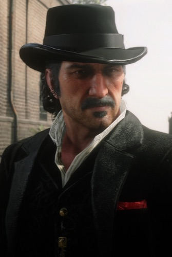
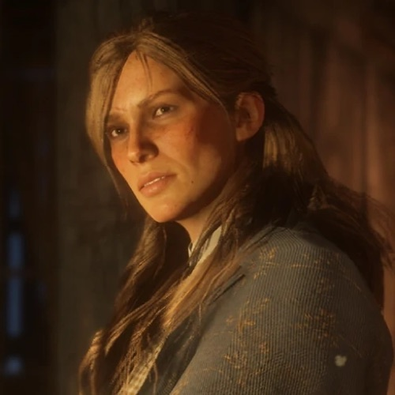
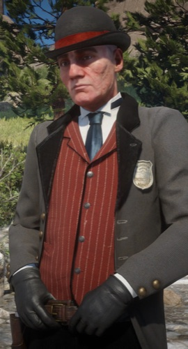
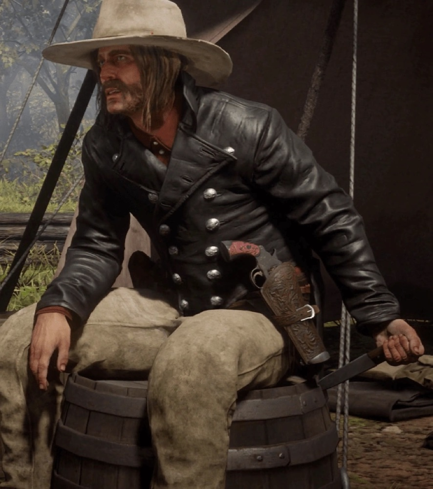

Personnage · Gang Van der Linde Micah Bell Mort en 1907 Décédé Antagoniste principal Voix de Peter Blomquist Par Joseph Lambert · Mis à jour le 23 juin 2026 Micah Bell est l'antagoniste principal de Red Dead Redemption 2 : un tireur cruel et égoïste qui rejoint le gang Van der Linde peu avant sa chute et le pourrit de l'intérieur. Là où Arthur Morgan incarne la conscience du gang, Micah en est le poison, le serpent qui murmure à l'oreille de Dutch van der Linde tandis que tout s'effondre. Son nom complet est Micah Bell III, et sa trahison ultime, travailler en secret comme informateur des Pinkerton, fait de lui l'homme le plus responsable de la destruction du gang. Il a été interprété par Peter Blomquist, dans un rôle que les fans adorent détester. Mort1907 StatutDécédé Nom completMicah Bell III NationalitéAméricaine AffiliationGang Van der Linde (ancien) ; informateur Pinkerton RôleTireur ; antagoniste principal de RDR2 JeuxRed Dead Redemption 2, Red Dead Online VoixPeter Blomquist Biographie Une arrivée tardive et dangereuse Micah Bell a rejoint le gang Van der Linde peu avant le désastreux coup de Blackwater en 1899, ce qui en fait l'un de ses membres les plus récents au début de Red Dead Redemption 2. Criminel de carrière à la cruauté manifeste, il se place vite au plus près de Dutch van der Linde, avide de devenir le bras droit du chef. Le serpent dans le camp À mesure que la fortune du gang décline, Micah se rend indispensable à Dutch, encourage ses pires instincts et pousse des plans toujours plus imprudents et sanglants. Il s'oppose sans cesse à Arthur Morgan, qui ne lui fait jamais confiance, et son influence enfonce un coin dans la famille.  Micah Bell, la pourriture au cœur du gang. Le traître démasqué L'ampleur de la traîtrise de Micah n'éclate qu'à la fin : il travaille en secret pour les Pinkerton, livrant à l'agent Andrew Milton des informations destinées à faire tomber le gang en échange de sa propre liberté. Arthur découvre la vérité trop tard pour sauver ce qu'il reste de la famille. Personnalité Micah est cruel, lâche et totalement intéressé, l'exact contraire de la loyauté que le gang de Dutch prétend chérir. Il prend plaisir à la violence, pousse les autres au carnage, et n'a d'autre cause que sa survie et son ascension. Ce qui le rend efficace n'est pas la force mais la manipulation. Il lit parfaitement les angoisses de Dutch et lui dit exactement ce qu'il veut entendre, transformant un chef vacillant en arme dirigée contre sa propre famille. Relations  Dutch van der Linde Le chef auquel Micah s'accroche et qu'il manipule, nourrissant sa paranoïa pour se rendre indispensable tandis que le gang se délite. Arthur Morgan Son principal rival au sein du gang. Arthur se méfie de Micah dès le départ et c'est lui qui finit par démasquer sa traîtrise. John Marston Un survivant du gang qui, des années plus tard, traque Micah pour solder le compte de tout ce qu'il a détruit.  Sadie Adler L'une de ses pires ennemies parmi les survivants ; elle se joint à la traque qui met fin à ses jours à Mount Hagen.  Andrew Milton L'agent Pinkerton pour qui Micah informe en secret, échangeant les secrets du gang contre sa propre liberté. Mort et destin En 1907, Micah a monté son propre gang et s'est terré à Mount Hagen, dans les montagnes enneigées où a commencé l'histoire du gang Van der Linde. John Marston, Sadie Adler et Charles Smith le traquent pour un règlement de comptes final. Lors de l'affrontement, un Dutch vieilli surgit de façon inattendue et, après un face-à-face tendu, tire une balle dans la poitrine de Micah avant de s'éloigner sans un mot. John l'achève, mettant fin à la vie de l'homme qui a déchiré le gang. Une conclusion froide et juste à la tragédie de Red Dead Redemption 2.  Micah Bell, enfin acculé à Mount Hagen. Coulisses Micah a été incarné par Peter Blomquist en voix et capture de mouvement. Le rôle est largement reconnu comme l'un des méchants les plus réussis du jeu vidéo, précisément parce que Blomquist rend Micah si sincèrement détestable, agaçant, suffisant et menaçant à parts égales. Rockstar sème des indices sur la trahison de Micah tout au long du jeu, récompensant ceux qui le rejouent en connaissant la fin. Sa véritable allégeance recontextualise presque chacune de ses scènes. Accueil et héritage Micah Bell est devenu l'un des personnages les plus détestés du jeu vidéo moderne, ce qui est exactement la réaction voulue par Rockstar. C'est ce rare antagoniste que les joueurs méprisent sur un plan personnel plutôt qu'ils n'admirent. Moteur de la chute du gang, Micah est indissociable de la tragédie de Red Dead Redemption 2, et une référence sur la manière dont un seul personnage peut empoisonner toute une histoire de l'intérieur. Anecdotes Son nom complet est Micah Bell III, laissant deviner une lignée de hors-la-loi. Arthur se méfie de Micah dès leur toute première mission ensemble, une intuition que l'histoire finit par confirmer. L'arc de Micah commence et s'achève dans la neige, encadrant l'effondrement du gang. Il apparaît dans Red Dead Redemption 2 et Red Dead Online, mais pas dans le jeu original de 2010. Galerie Micah dans les montagnes. La perte du gang.